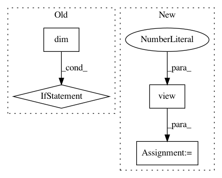

b2951813547426828d313a80c52de8a619e99731,gpytorch/lazy/constant_mul_lazy_tensor.py,ConstantMulLazyTensor,_quad_form_derivative,#ConstantMulLazyTensor#Any#Any#,90
Before Change
constant_deriv = left_vecs * self.base_lazy_tensor._matmul(right_vecs)
constant_deriv = constant_deriv.sum(-2, keepdim=True).sum(-1, keepdim=True)
if constant_deriv.dim():
constant_deriv = constant_deriv.view(*self.constant.size())
res.append(constant_deriv)
return res
def _constant_as(self, other):
After Change
constant_deriv = constant_deriv.sum(-2).sum(-1)
// Get derivaties of everything else
constant = self.constant.view(*self.constant.shape, 1, 1)
left_vecs = left_vecs * constant
res = self.base_lazy_tensor._quad_form_derivative(left_vecs, right_vecs)
return res + (constant_deriv,)
In pattern: SUPERPATTERN
Frequency: 3
Non-data size: 4
Instances
Project Name: cornellius-gp/gpytorch
Commit Name: b2951813547426828d313a80c52de8a619e99731
Time: 2018-11-26
Author: gpleiss@gmail.com
File Name: gpytorch/lazy/constant_mul_lazy_tensor.py
Class Name: ConstantMulLazyTensor
Method Name: _quad_form_derivative
Project Name: maciejkula/spotlight
Commit Name: bc51dbc0c56f68ed30857755026633f78eef1ae8
Time: 2017-08-20
Author: maciej.kula@gmail.com
File Name: spotlight/layers.py
Class Name: BloomEmbedding
Method Name: forward
Project Name: rusty1s/pytorch_geometric
Commit Name: 1f0750670cf8ea24ad264debf9603002ab0fb565
Time: 2021-03-15
Author: matthias.fey@tu-dortmund.de
File Name: torch_geometric/nn/pool/mem_pool.py
Class Name: MemPool
Method Name: forward